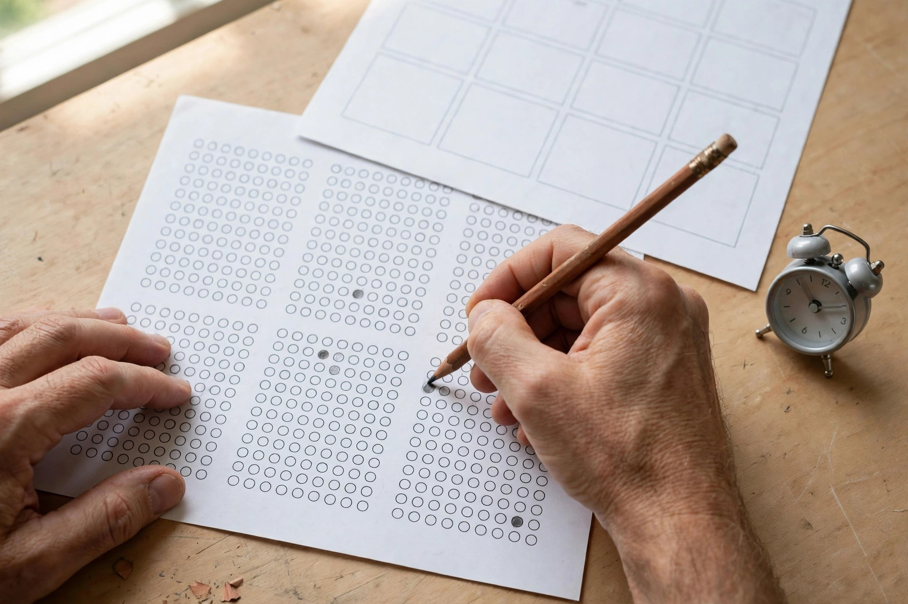
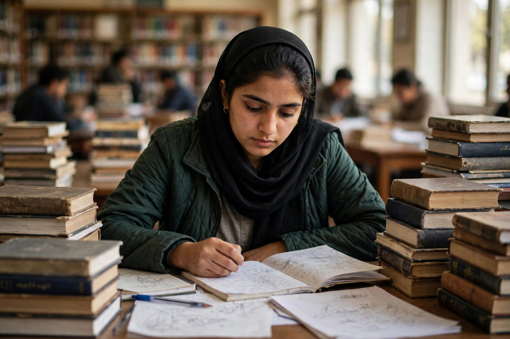

When a government department, bank or private organisation in Pakistan needs to hire, it often hands the screening to a testing service — and one name that keeps appearing on advertisements is CTS, the Candidate Testing Service. If your roll-number slip says CTS, you are facing a timed MCQ screening test, not a deep subject exam.
The good news is that CTS tests are among the most predictable screening tests in Pakistan: English, basic maths, general knowledge and reasoning, again and again. This guide explains the pattern, breaks down every section, and gives you a 30-day plan you can start today.
What Is the CTS Test?
CTS — the Candidate Testing Service — is an independent testing body that conducts recruitment and screening tests for public-sector departments and private employers across Pakistan. When you apply for a post through CTS, the service shortlists candidates with a written MCQ test, and the employer then interviews the shortlisted ones.
That means the CTS paper is a filter, not a final exam. Your job is to score above the cut-off in a general-ability paper. Most candidates fail because they prepare for the wrong thing: they memorise textbooks while the test measures speed and accuracy.
The CTS Test Pattern
The exact pattern changes from one advertisement to another, but the common shape across most CTS papers looks like this:
- Total questions: typically 100 MCQs (some tests have 50 or 80)
- Total marks: usually 100 (1 mark per question)
- Time allowed: typically 90 to 120 minutes
- Question type: four options per MCQ
- Negative marking: varies — some CTS tests deduct marks for wrong answers, others do not; your advertisement is the final authority
- Sections: English, quantitative ability, general knowledge and reasoning, plus subject questions for technical posts
The single most important preparation step costs nothing: read your own advertisement carefully. It tells you the question count, the time, the sections and whether there is negative marking.

Section-Wise Breakdown: What to Study
English — usually the biggest section
English typically carries 20 to 30 questions and decides the merit list, because every candidate faces the same paper regardless of degree. Expect synonyms and antonyms, one-word substitutions, idioms, prepositions, spotting errors, sentence correction and a short passage. Grammar is tested through usage, never definitions.
Prepare daily: ten new words a day, one short passage daily, and drills of the most repeated prepositions and idioms. Practise on English MCQs in timed sets of 20, and write every word you get wrong into a notebook. Our English vocabulary techniques guide gives a daily system for this paper.
Quantitative ability — basic maths, under pressure
The maths section is deliberately basic: percentages, ratios, averages, profit and loss, simple interest, age problems and simple algebra. The questions are easy on paper and hard in the hall, because you get roughly one minute each — and no formula sheet is allowed.
Revise one topic a day and solve 20 questions on it the same evening. Our Basic Mathematics MCQs and the formulas guide cover the formulas CTS papers draw from.
General knowledge, Pakistan Studies & Islamiat — the memory marks
This is where preparation pays fastest. CTS papers regularly ask about Pakistan's history and geography, the constitution, national symbols, rivers and dams, famous firsts, world capitals and basic Islamic knowledge. These are pure recall questions: every one you memorise is a mark in the bank.
Cover the most repeated topics first rather than reading whole books. Our General Knowledge MCQs and Pakistan Studies MCQs are built from questions that keep reappearing in screening tests.
Analytical reasoning & IQ — the section you cannot cram
Reasoning questions test how you think, not what you memorised: number and letter series, odd-one-out, analogies, coding-decoding and direction sense. You cannot revise for these the night before — a few questions every day until the patterns become familiar is the only preparation that works.
Negative Marking & Attempt Strategy
CTS does not follow one fixed rule on negative marking — some tests deduct a fraction of a mark per wrong answer, others do not. Find out before test day. If there is no negative marking, never leave a question blank — a guess costs nothing. If there is negative marking, guess only when you can eliminate at least two options.
Attempt the paper in two passes. First pass: answer only what you know confidently and skip everything doubtful. Second pass: return to the skipped questions and make educated guesses after eliminating options. Never let one hard question eat three minutes — every question is worth the same one mark.

Your 30-Day CTS Study Plan
Thirty focused days are enough for most CTS screening tests:
- Days 1–7: Foundation. Note the exact pattern from your advertisement. Finish one reading pass of GK, Pak Studies and Islamiat basics. Start 20 English + 20 maths MCQs a day.
- Days 8–14: Volume. Attempt 150+ mixed MCQs daily. Begin 10 reasoning questions a day. Revise maths formulas until you can write them from memory.
- Days 15–21: Past papers. Solve recalled CTS papers under timed conditions. Keep an error notebook — every wrong answer goes in with its explanation.
- Days 22–30: Simulation. Take full 100-MCQ mock tests in your advertisement's time limit, like our CTS exam simulator. Revise only your error notebook in the final three days.
Past Papers: Why They Matter for CTS
Screening tests repeat themselves. The same English idioms, GK facts and maths question types appear in test after test, sometimes word for word. Do not just read past papers — solve them like real exams, with a timer, and study every option, including the wrong ones. Our 100-MCQ practice sets are designed for this kind of timed rehearsal.
5 Mistakes That Cost Candidates Their Selection
- Preparing from the wrong pattern. Studying a PPSC or NTS pattern for a CTS test wastes weeks.
- Reading books instead of solving MCQs. Preparation must be MCQ-shaped.
- Ignoring the clock in practice. Without a timer, your mock scores are fiction.
- Skipping maths and reasoning. Both are trainable in a month, and together they decide the merit list.
- Leaving questions blank when there is no negative marking. An unattempted question is a guaranteed zero.
- CTS is a timed MCQ screening test — typically 100 questions in 90–120 minutes.
- English, maths, GK and reasoning decide the merit list; read your advertisement for the exact pattern and negative marking rule.
- Prepare in MCQ format with a timer — books alone do not build speed.
- Past papers repeat: solve recalled papers and revise your error notebook in the final days.
Frequently Asked Questions
What is the CTS test in Pakistan?
CTS — the Candidate Testing Service — is an independent body that runs MCQ screening tests for government departments and private employers in Pakistan. Passing it shortlists you for the employer's interview.
How many questions are in a CTS test?
Most CTS tests have around 100 MCQs in 90 to 120 minutes, though some posts use 50 or 80. The exact count and time are printed in your test advertisement.
Is there negative marking in the CTS test?
It varies: some CTS papers deduct marks for wrong answers and others do not. Your advertisement is the final authority — and if there is no negative marking, never leave a question blank.
Where can I practice free CTS MCQs online?
Right here — MCQs Tayyari offers thousands of free subject-wise MCQs, a full exam simulator and timed practice sets. Start with the CTS test page or take a mock test now.
Start practicing — free, no login needed
195,000+ MCQs · solved past papers · real exam simulator with timer & negative marking